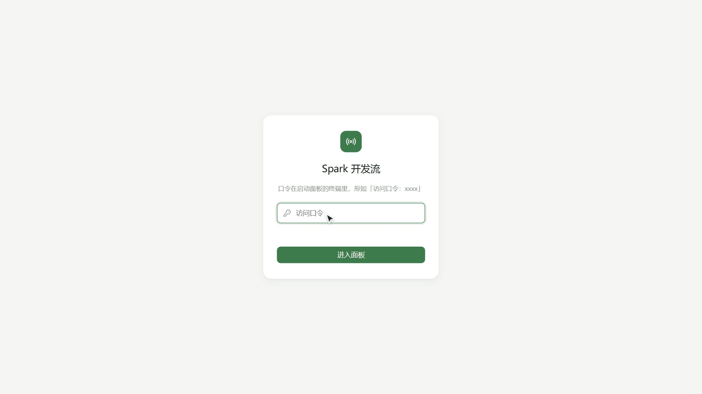
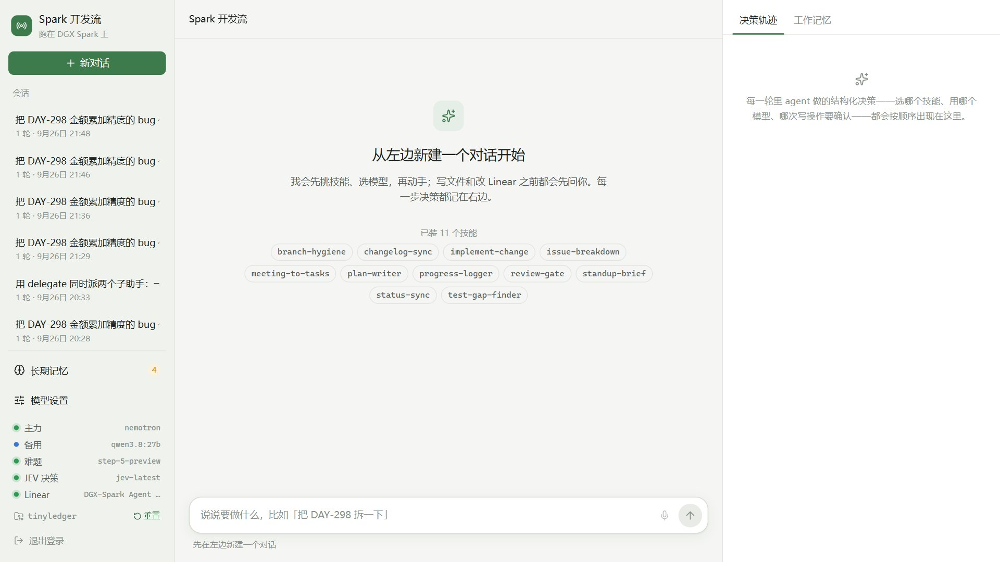
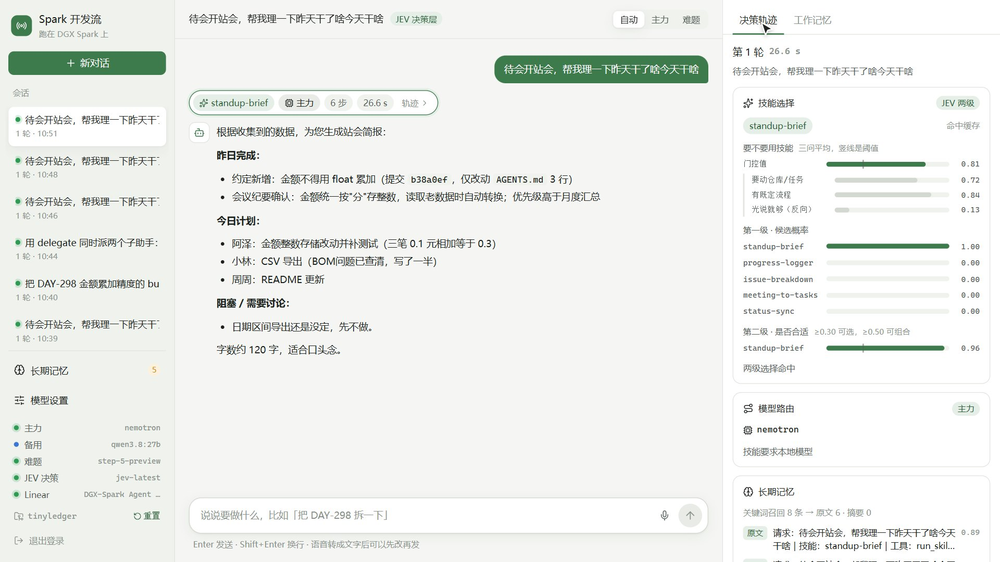
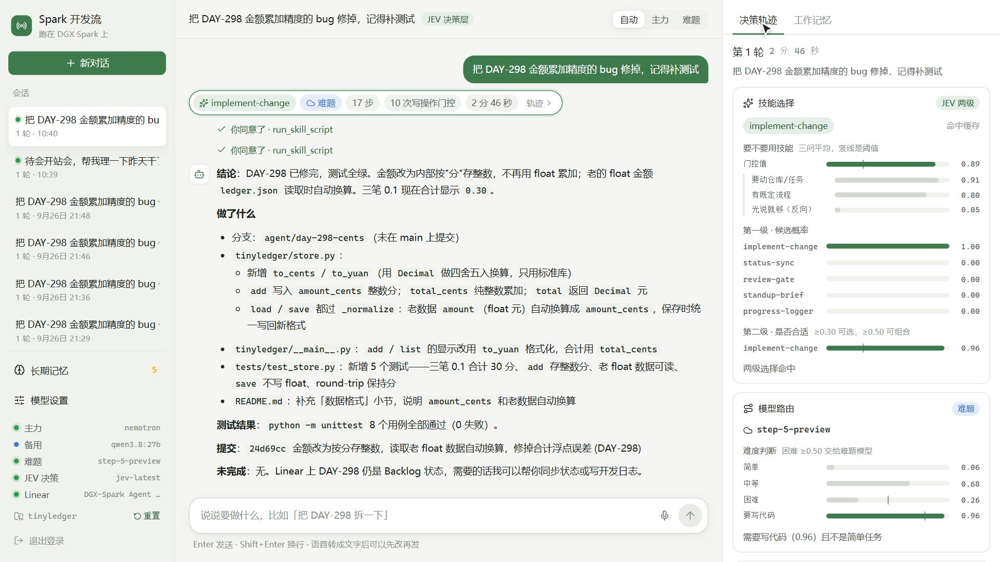
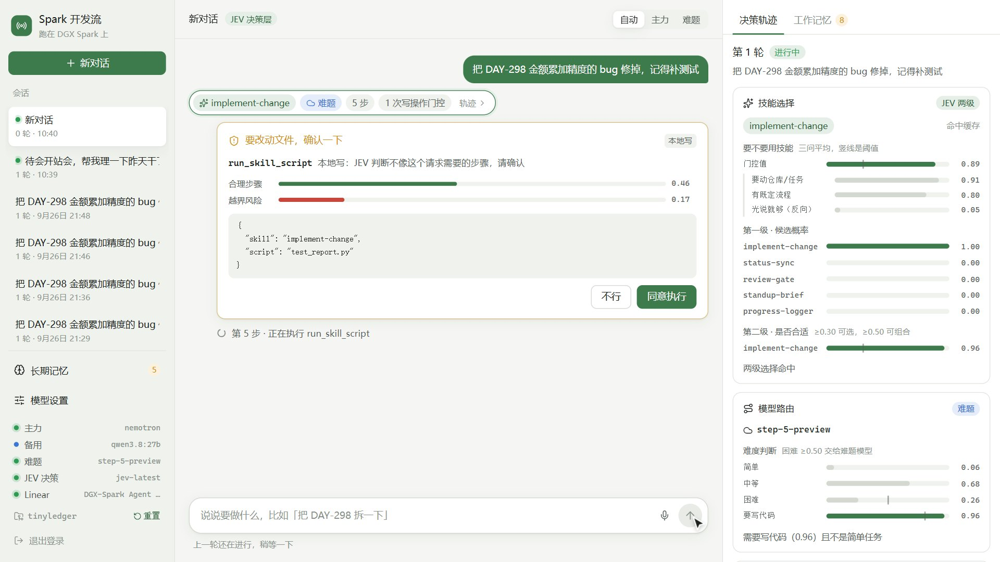
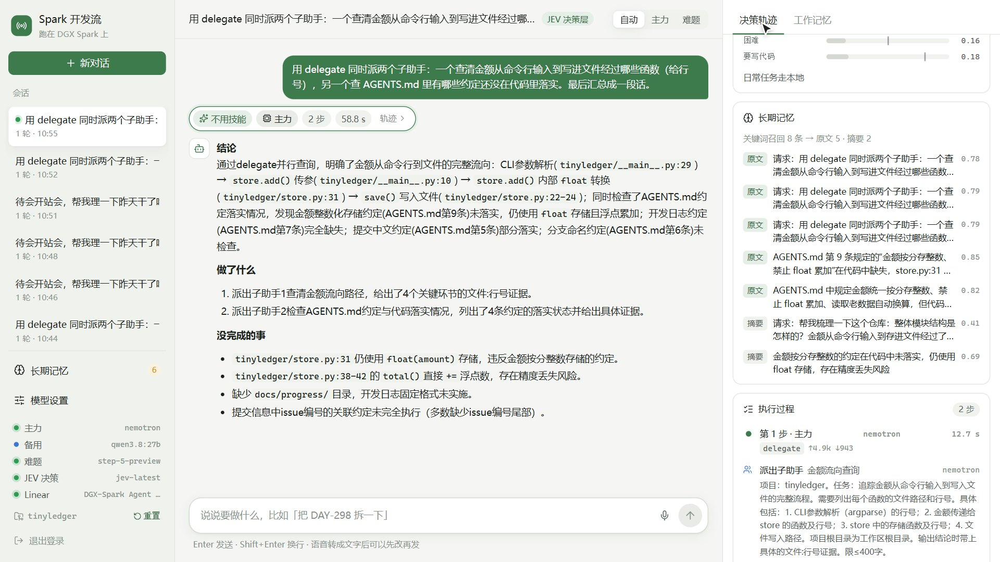
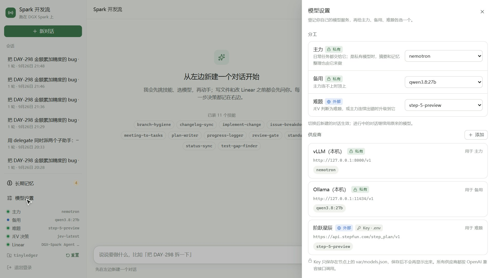
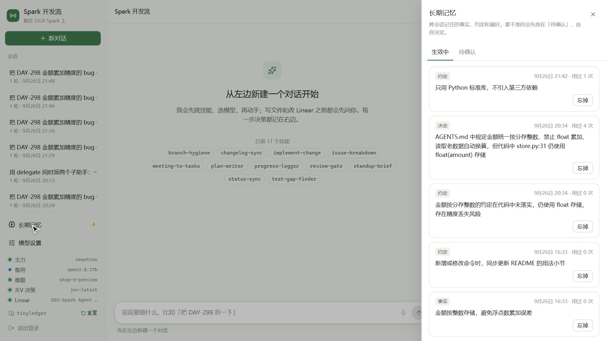

一个跑在 NVIDIA DGX Spark 上的开发流助手：读 Linear issue、会议纪要和你说的话，完成"拆解 → 计划 → 开发 → 写日志 → 同步状态"。每一个"选哪个"都交给 JEV 做结构化判断，并在右侧逐条展示。
用电脑浏览器（Chrome / Edge / Safari）打开地址，输入访问口令即可，同一浏览器 7 天内不用再输。口令仅供评审使用，请勿外传；评审结束后我们会更换。{{AVAILABILITY}}
代码仓库：github.com/arvelvale/spark-devflow-agent · 本指南中的截图均为真实运行界面
不需要安装任何东西，也不需要自己的 API Key。模型、决策服务和演示数据都已经在我们的 DGX Spark 节点上准备好。


主界面：左侧会话与服务状态，中间对话，右侧决策轨迹。
下面 5 条由浅入深，每条都是一个新对话里的一句话。一轮进行中请等它结束再发下一句。
standup-brief，判断为日常任务交给本地 Nemotron。先点左下角仓库名旁边的「重置」，演示仓库会回到带着 bug 的初始状态（每位评委都从同一个起点开始）。然后新建对话：
把 DAY-298 金额累加精度的 bug 修掉，记得补测试issue-breakdown 技能读 issue 后给出子任务表格。只有你明确说"建到 Linear 上"才会创建，而且每一条都要你确认。看点：JEV 判断不需要任何技能（不硬凑），直接用只读工具回答，可以和 ① 对比着看。

完成一轮站会简报后的界面。中间是回复与本轮摘要条，右侧是决策轨迹。
| 新对话 | 新建一个在线会话。历史会话可以点开回放，但只能查看。 |
| 长期记忆 | 跨会话记住的约定和事实；拿不准的放在「待确认」由你决定。 |
| 模型设置 | 登记自己的模型服务、给三个分工位选模型（第 05 节）。 |
| 状态灯 | 运行 待命 异常 离线 |
| 重置 | 仓库名旁边：把演示仓库恢复到初始状态（只影响演示沙盒）。 |
| 摘要条 | 每轮回复上方：用了哪个技能、哪个模型、几步、多久。点它右侧切到这一轮的轨迹。 |
| 确认卡 | 门控拿不准的写操作会停在这里等你，附 JEV 的两项评分。 |
| 档位切换 | 右上角「自动 / 主力 / 难题」：默认由 JEV 决定，也可以手动指定下一轮用哪个模型。 |
| 工作记忆 | 右侧第二个标签：本轮的目标、约束、待办和关键证据，不会被上下文压缩丢掉。 |
普通 agent 让主模型自己拍板；这里每一个"选哪个"都由 JEV 回答一组结构化问题，给出概率，再按写在代码里的阈值做决定。轨迹里的卡片按发生顺序排列：
| 卡片 | JEV 在回答什么 | 怎么看 |
|---|---|---|
| 技能选择 | 这句话要不要技能（三问平均）；要的话哪个最像（第一级概率）；每个候选是否合适（第二级） | 竖线是阈值；「命中缓存」表示同样的问题问过，直接复用 |
| 模型路由 | 难度是简单 / 中等 / 困难的概率，是否需要写代码 | 困难 ≥ 0.50 或要写代码且不简单 → 交给难题模型 |
| 长期记忆 | 召回的记忆各自与当前请求有多相关 | ≥ 0.70 放原文，0.40–0.70 只放一行 |
| 执行过程 | 每一步调用了哪个模型、哪些工具；写操作的门控两问：合理步骤？会不会动无关内容？ | 放行 / 需确认 / 拦截；读操作不问 |
| 派出子助手 | （由主模型决定派发）子助手用了哪些工具、交回什么 | 点「看结论」展开 |
| 压缩上下文 | 对话太长时，每个旧工具调用"还要不要记得、还要不要原文" | 保留 / 截短 / 移除；原文都能取回 |
| 提醒回到计划 | 连续 3 次写操作被判为跑偏时出现 | 说明 agent 可能在绕路 |

修 DAY-298 时的轨迹：路由升级到 step-5，执行过程里每次写操作都有门控评分。

门控拿不准时，写操作停下来等你确认。卡片上是 JEV 的两项评分：「合理」越高越像完成请求的正常步骤，「越界」越高越可能改到无关内容。

一次派出两个只读子助手，在本地模型上并行调查，只把结论交回主对话。

模型设置：三个分工位与已登记的供应商。

长期记忆：生效中 / 待确认。
对话结束后，agent 会把值得长期记住的约定、决定写进这里：JEV 评为很值得记的直接生效，拿不准的放进「待确认」。你可以「记住它」或「忘掉」。
| 范围 | 说明 |
|---|---|
| 代码仓库 | agent 只操作一个演示仓库 tinyledger（记账小工具），在节点的沙盒目录里，所有改动都在独立分支上提交。随时可以用「重置」恢复。 |
| Linear | 只能读写一个演示项目「DGX-Spark Agent 演示」。任何写 Linear 的操作（建 issue、改状态、评论）一律弹确认卡，JEV 判为明显不相关的会直接拦截。 |
| 命令执行 | 只允许白名单里的测试命令，不经过 shell；子进程拿不到任何 API Key。 |
| 子助手 | 只读，不能改文件，也不能再派发。 |
| 密钥 | 模型和服务的 Key 只在节点上，界面和接口都不返回原文。 |
| 数据 | 会话轨迹和记忆保存在节点上，便于我们复盘评审中的真实运行。 |
| 现象 | 原因与处理 |
|---|---|
| 打不开页面 / 一直转圈 | 服务运行在我们的节点上，由团队机器维持连接。请稍后重试，或联系我们（封面联系方式）。 |
| 麦克风按钮不能用 | 浏览器只在 https 或本机地址下开放麦克风，本地址是 http，所以语音输入不可用，请直接打字。语音识别本身已接入（阶跃 ASR），在本机访问时可用。 |
| 发送后提示"上一轮还在进行" | 一轮结束前不能发下一句。修 bug 这类任务需要几分钟，可以边看右侧轨迹边等。 |
| 修 bug 时说"已经修好了" | 之前有人修过。点左下角仓库名旁边的「重置」再试。 |
| 点「重置」提示有对话在进行 | 可能有其他评委正在运行任务，等它结束（通常几分钟内）再重置。 |
| 某个状态灯是琥珀色 | 对应服务暂时不可用。JEV 不可用时各环节会自动降级（写操作一律改为人工确认），不影响基本使用。 |
| 左侧有很多历史会话 | 包括我们开发调试和其他评委的会话，点开只能回放，可以用来对照不同运行的轨迹。 |
| 同一句话两次结果不同 | 大模型本身有随机性；JEV 的判断带缓存，同样的问题会复用上次的答案。 |
| 硬件 | NVIDIA DGX Spark（GB10 Grace Blackwell，121 GB 统一内存） |
| 本地推理 | vLLM + Nemotron-3.5-Lightning-30B-A3B（NVFP4），主力模型；Ollama + Qwen3.8-27B 备用 |
| 云端 | 阶跃 step-5（难题）、阶跃语音识别与合成 |
| 决策层 | JEV（TypeSafe）：技能选择、模型路由、写操作门控、记忆精选、上下文压缩 |
| 工作流 | Linear（issue）、Obsidian（会议纪要）、Git（演示仓库） |
| 评测 | JEV 决策层 | 主模型自己选 |
|---|---|---|
| 技能选择完全正确率（60 条任务） | 81.7% | 75.0% |
| 不需要技能时硬凑一个的比例 | 33.3% | 50.0% |
| 写操作门控（33 条标定用例） | 判对 27 条 | |
以上数字来自提交前的一次完整评测，评测脚本和任务集都在仓库 eval/ 目录，可复现。